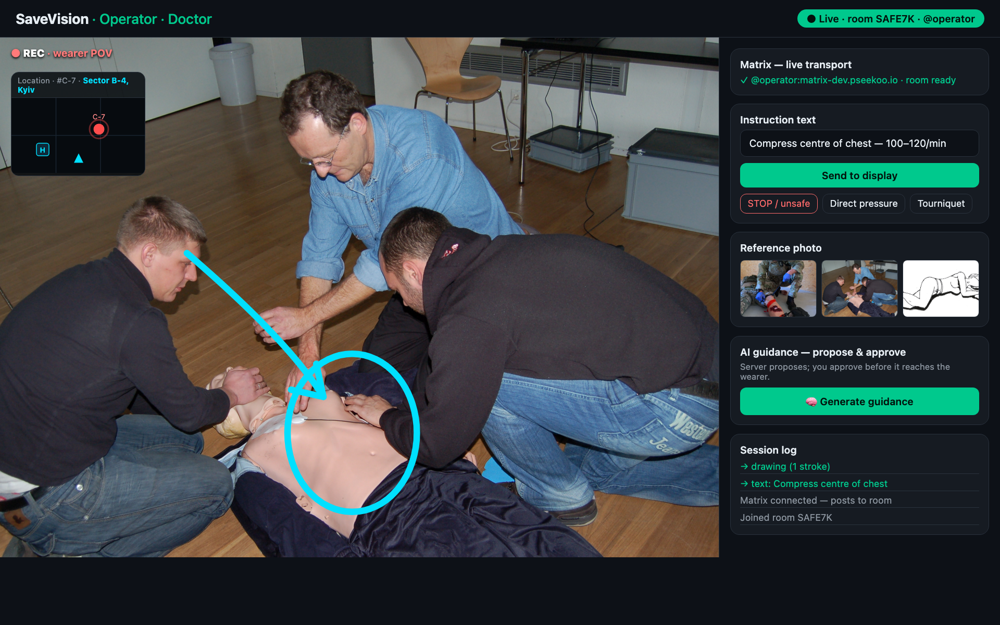
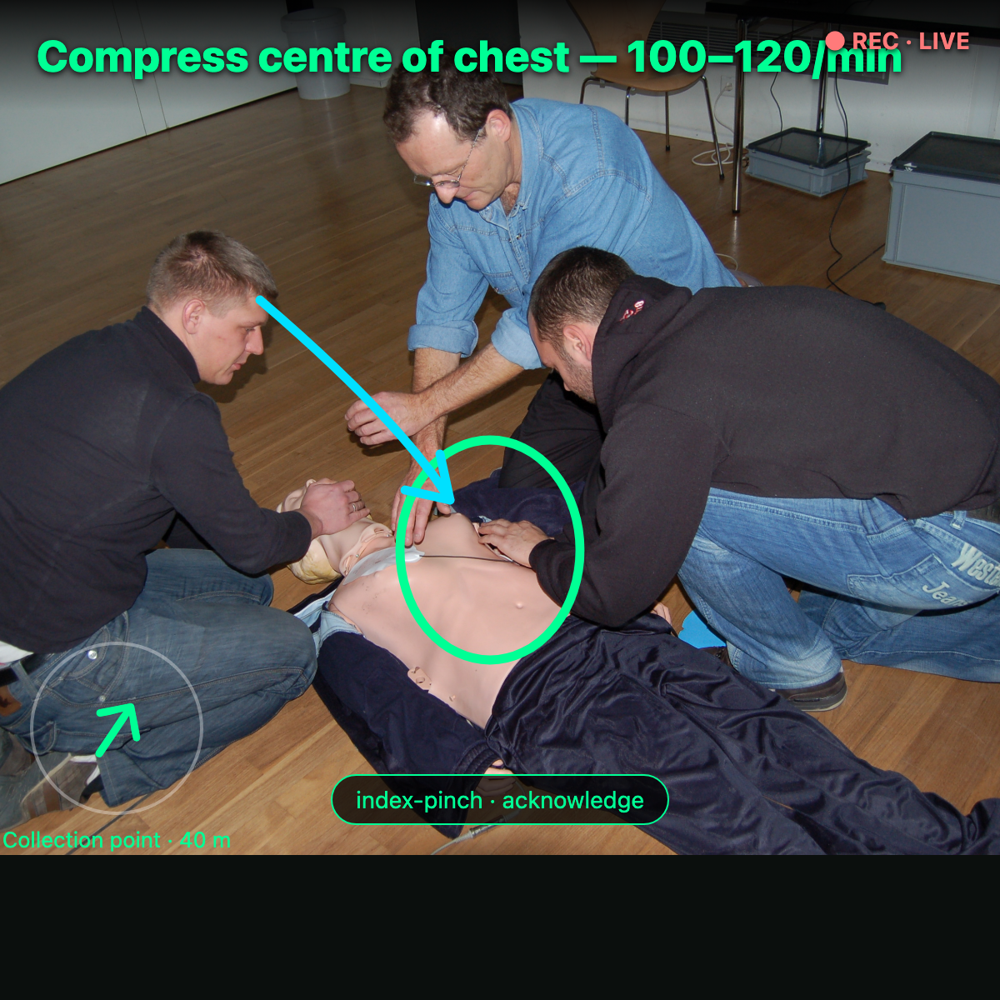

A doctor's eyes and judgment, beside the casualty in the first minutes that decide survival.
From the phone or the glasses, the bystander reaches the operations centre. The glasses POV links automatically.
A licensed doctor watches the live POV, sees the location on a map and the ambulance ETA.
Instructions, drawings on the wound, reference photos, a map — and you approve AI proposals before they're sent.
| Step | What you guide | Bystander action |
|---|---|---|
| M — massive haemorrhage | tourniquet "high & tight", wound packing, direct pressure, note time | applies / packs / presses |
| A — airway | positioning, recovery position | repositions the casualty |
| R — respiration | observation, positioning | reports what they see |
| C — circulation | signs of shock, keep flat | monitors |
| H — hypothermia | cover, keep warm | covers the casualty |

